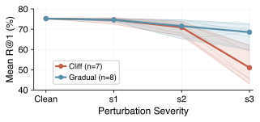
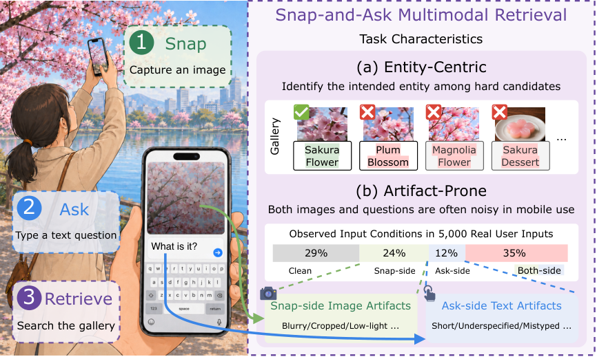
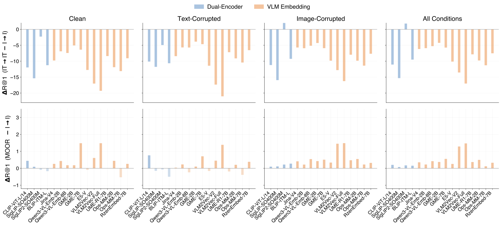
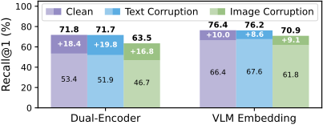
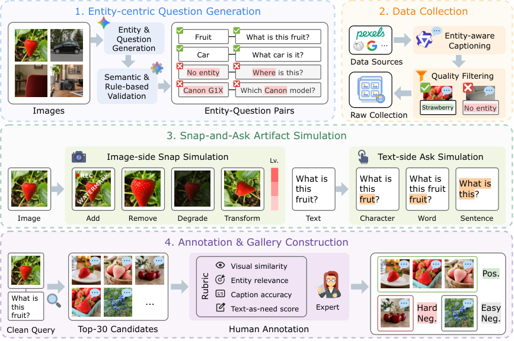

Images are the bottleneck.
Increasing image corruption severity typically lowers recall. Robustness varies sharply across operations and models.

Figure 3 · image severity response
FINDINGS OF EMNLP 2026
Benchmarking Snap-and-Ask Multimodal Retrieval
for Mobile Interactions
Everyday photos. Short questions.
One fixed target. A world of imperfect inputs.
1 HKUST (Guangzhou)2 Tencent Yuanbao3 Tsinghua University4 ARC Lab, Tencent5 The University of Hong Kong
THE BENCHMARK
Snap-and-ask retrieval combines a photo with a short question to find the relevant item. SnapBench tests what happens when the photo degrades, the question changes, or both happen together.
Each corrupted query keeps its target, candidate gallery, and relevance labels fixed. This makes the effect of an imperfect input directly comparable to its clean counterpart.

DEMO I · SIX DOMAINS
Browse six examples from the released benchmark. Similar-looking candidates make the short question matter. Reveal the annotation to see which candidate is relevant.
One relevant item and three hard negatives from this query’s annotations.
Released dataset examples. This is an annotation viewer; no model inference is run here. Explore the dataset ↗
DEMO II · PAIRED PERTURBATIONS
Explore real flower queries with image perturbations generated by SnapBench’s official repository code. Choose a photo, an operation, and a severity level to compare it with the clean query.
02 · TEXT PERTURBATION
What variety of flower is this?
Query photos and all eight text variants come from the released dataset. Image variants are newly generated with the official repository functions and severity parameters, using fixed random seeds. They are not the paper’s original exported images and have no per-photo retrieval scores.
REPORTED RESULTS
Compare all 16 evaluated models using the paper’s Macro Recall@1 (%). Switch the condition to see how retrieval changes across image families and text perturbations.
Selected condition Clean reference
| Model | Clean | Overall | Δ vs clean |
|---|
Source: Paper, Table 2 ↗. Overall averages all 54 states. Image selections average operations within a family at the selected severity; text selections use the reported character, word, or sentence group means. Sorted by selected score.
Increasing image corruption severity typically lowers recall. Robustness varies sharply across operations and models.

Figure 3 · image severity response
A vague question can weaken the visual query. Coarse-text drag motivates a fusion rule that adapts to the evidence.

Figure 6 · coarse-text drag
METHOD · MOOR
MOOR is a training-free retrieval fusion method. It checks agreement between similarity paths and adapts their contribution, helping noisy or vague inputs avoid dominating the ranking.
Normalize embedding geometry using gallery-side statistics.
Compute four image and text similarity paths.
Use bell-gated rank consistency to assess the paths.
Combine the evidence with variance-based weights.
MOOR average Macro Recall@1
Table 13 · aggregate means, not an individual model score

BENCHMARK CONSTRUCTION
Query curation, candidate selection, relevance annotation, and controlled corruption form a reproducible test of mobile retrieval robustness.

Fixed candidate gallery. Clean and corrupted queries search the same items.
Stable relevance labels. Corruption changes the input, not the intended target.
Macro Recall@1. The reported comparisons use the benchmark’s primary metric.
USE SNAPBENCH